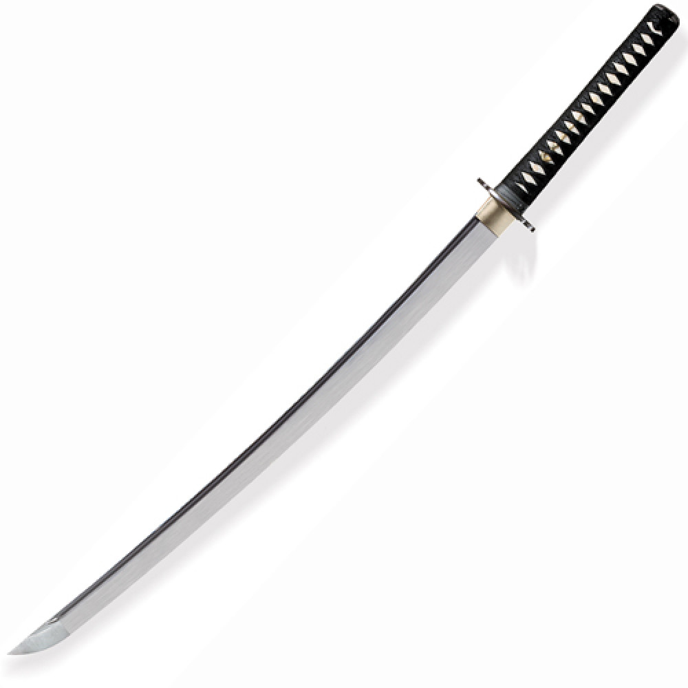

Katana

Katana (刀) é uma tradicional espada japonesa que foi usada pelos samurais do Japão antigo e feudal. A catana é caracterizada por: uma lâmina curva de um único fio, com uma guarda (tsuba) circular ou esquadrada e um cabo longo para acomodar duas mãos.